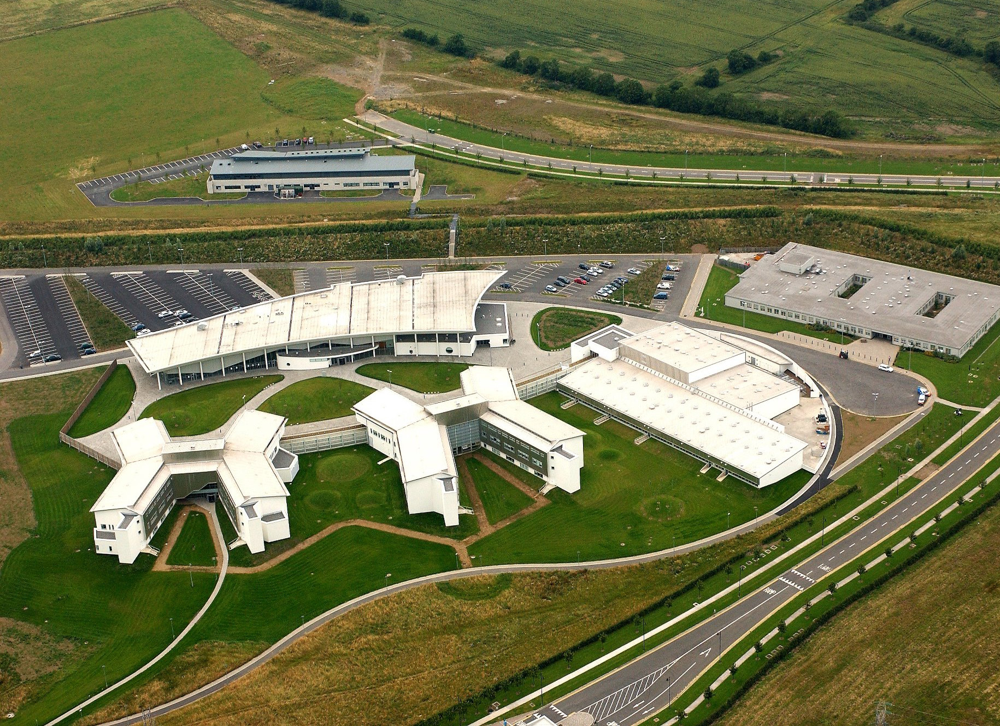

Institute of Technology, Blanchardstown (ITB) established in 1999, is a third-level institution, and a future constituent institute of Technological University Dublin. It was the last-founded Institute of Technology in Ireland and is located within the Business and Technology Park on Blanchardstown Road North, about 15 km from Dublin City and close to the N3 (Navan Road). ITB provides full-time and part-time higher education courses in a wide range of subjects, making awards at levels from higher certificate, to PhD.

A Block: ITB's first building, opened September 1999, contains computing and engineering laboratories and three large
lecture theatres.
LINC Building / B Block: Built May–October 2001, initially for workshops, and now
hosting small business ventures and supporting college-industry links. Also Post-Grad research facilities.
C Block: Canteen, medical centre, Students' Union, chaplains' offices, sports hall and gym.
D Block: Apprentice workshops, including electrical, masonry, carpentry and plumbing, as well as maintenance and
goods receiving.
E Block: A two-wing building containing classrooms, science laboratories, language laboratories, two large lecture
theatres, most academic staff offices and the student helpdesk.
F Block: The current official entry point, this holds the reception, Marketing and senior management offices, and
the largest lecture theatre.
S Block: Sports building.